北海道、その最果て地へ。
本当に行く、とは思ってなかった。
人生で一回は行ってみたいなとは思ってたけど、もっと歳とってからになるのかなとか。
ただ、そのことを大学の友人M君に言ってみたら、予想以上に彼が乗り気で。
気づいたらツアーの予約を取ってしまっていた。
2人での旅行。ツアーは3泊4日で値段は各10万円。
Googleで検索すれば上位に出てくるやつである。
9月24日。まだ暑さの残る朝の羽田空港の展望台には、晴れわたる青空が広がっていた。
これから向かう最果て地の景色が、今はまだ遠い蜃気楼のように思えて、
私はふわりと宙に浮いたような心地だった。
＊ ＊
このとき、私はある問題を抱えていた。
私の通う大学には、通称プログラム配属という、東大でいう進振り制度と同じく
成績の高い順に希望する専攻に進めるというシステムがあって（=成績が悪いと希望専攻に入れない）、
その発表が9月下旬に迫っていたのだ。（なぜか具体的な期日は公表されてなかった）
私の成績は、例年ならおおよそ大丈夫かなという程度。対して、希望人数は数年稀にみる人気ぶりだった。
配属に通るのか。それが心配で私は緊張状態がとれなかった。
これがなかったらもっと旅行楽しめたんだろうな。
ただタイミングなんていつでも合うわけではない。大事なのは、限られた環境で目一杯楽しく生きることだ。
＊ ＊
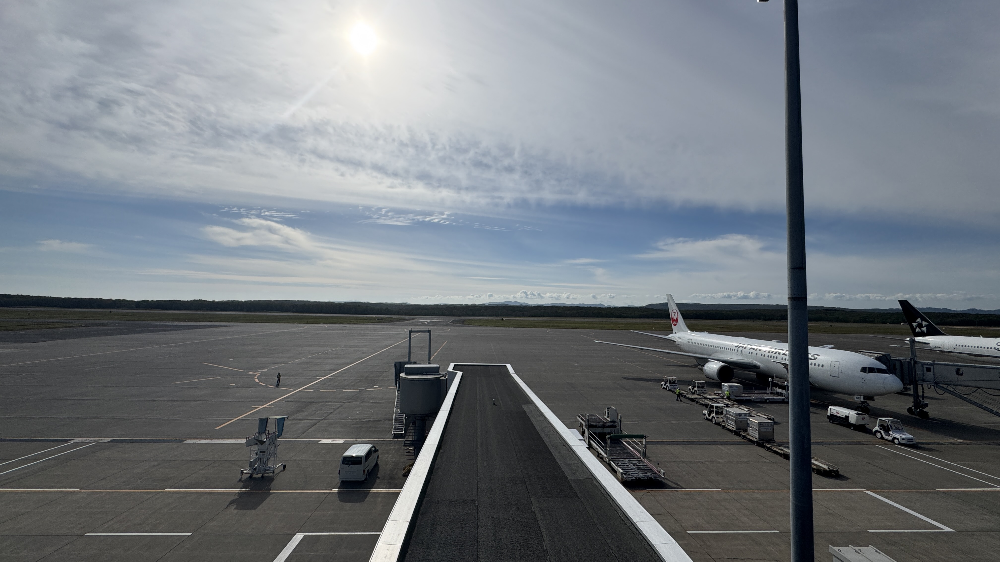
1日目 13:30 釧路空港
凄い。水平線上に何もない。
空港外に一歩でも踏み入れたら途端に吸い込まれてしまいそうな世界が、そこにはあった。
遠くに来たなという実感が、すぐに、かつありありと胸に湧き上がった。
気温も18度と、東京に比べて随分ひんやりと感じられた。

14:30 バス
道路のすぐ側に、鳥とか牛とか馬がそこら中にいる。
都会ではあり得ない光景だ。

15:30 釧路湿原
絶世界とは、木すらほとんど生えていない、草原のただ一面に広がるこの景色のことを言うんだと思った。
冒頭のサムネイル写真も、この湿原で撮影したものである。
天候がやや心配されていたが晴れた。ほとんど会話もせず、整備されているウッドデッキの上を
噛み締めながら歩いた。
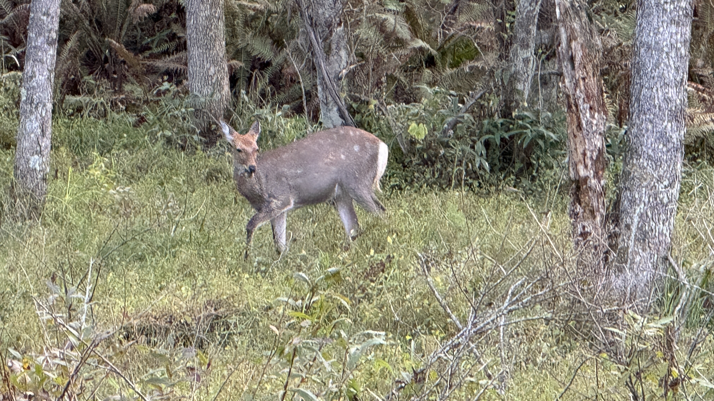
野生の鹿に普通に遭遇できる。
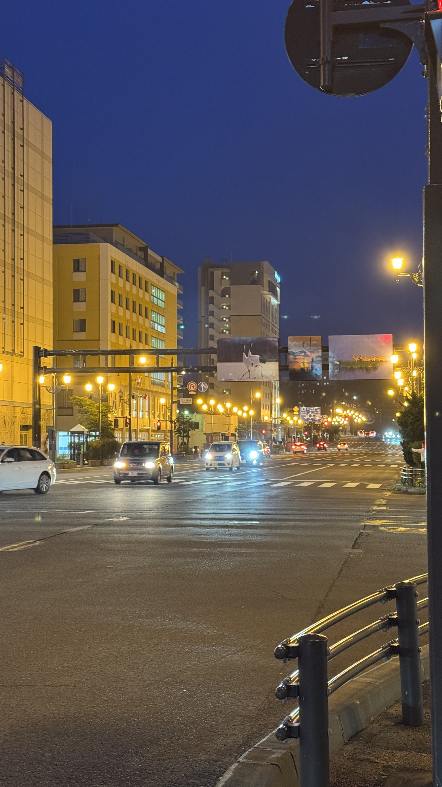
18:00 市街地
夕食は居酒屋で、海鮮を中心に注文。
さんまの刺身というのを初めて食べたが、とても美味しかった。
釧路の市街地は、ビルが点在し少し寂しい雰囲気はあるものの、相応に発展していて安心感のあるような気がした。
裏路地はかなり廃れている場所もあった。道路が広く、完全なる車社会だった。
私の知ってる街で近い場所は……うーん、なかなか思いつかない。
※P.S. 上の写真で看板に景色の写真が直張りされているが合成でない。帰宅後に発見。珍しいなと思った
＊
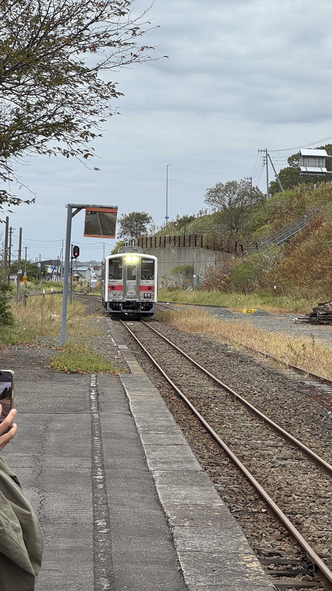
2日目 9:00 厚岸駅（花咲線）
天気は終日雨予報。なんとかもってくれるといいが……
今日は駅のホームからスタート。単線非電化路線って風情あっていいよね。
車窓は木が多くてあまり変わり映えせず。少しだけ期待外れだったかも。
それでも、北海道で相次いで路線が廃止されているのを憂う。

12:00 納沙布岬
そしてバスは本土最東端へ。
この辺りは丈の低い草がただ広がっているだけで、本当に寂しい雰囲気がある。
上の写真からは分かりにくいが、この時は結構雨が強く降っていて、かなり寒かった。
なお、ここは視界良好であれば肉眼で北方領土が見える場所である。
降雨の中でも火の絶えないシンボル像を前に、手を合わせて北方領土返還の祈りを捧げた。
なおオーロラタワーは今は廃墟である。少しだけ血が騒ぐのを感じた。
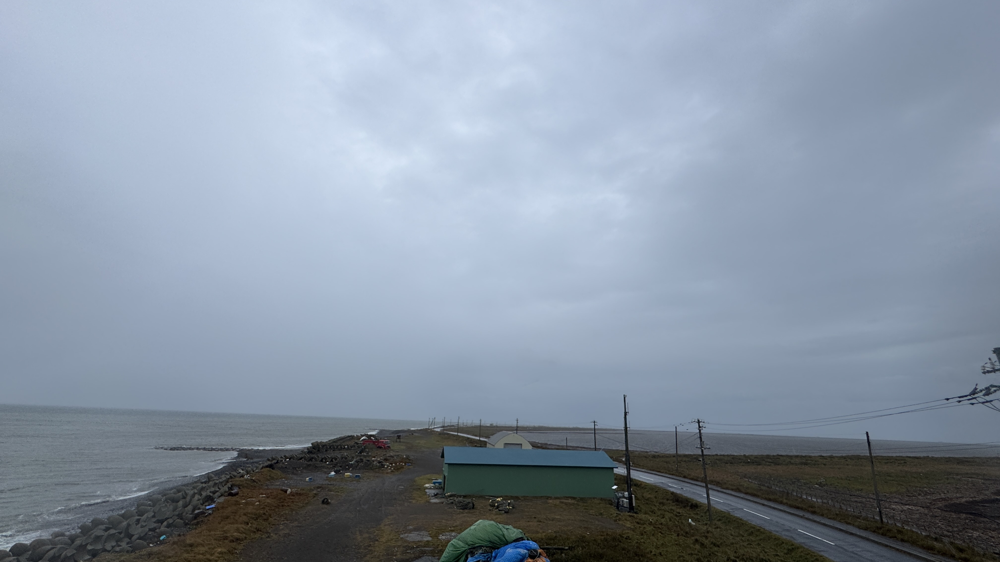
15:30 野付半島
この付近は、海水の流入による塩害で木は枯死し、全く育つ環境ではないらしい。
砂嘴と呼ばれる地形で、道路の両側にすぐ海が迫っている。風でバスが左右に揺れるのが心許なく感じる。
実はこの時、雨と寒さと例の不安で精神がきつく少し記憶がなくなっているのだが
ともかく滅多に来られない場所に来れた、という印象は残った。
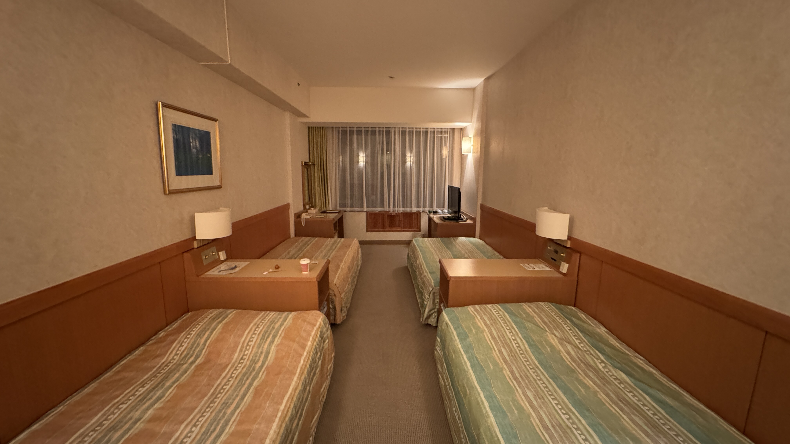
18:00 ホテル
2人旅行なのにベッドがシングル4台で笑った。無理やり移動させて1人2台を使う。
今日は移動も400kmと長くて疲れた。ゆっくり休んで明日に備えよう。
＊
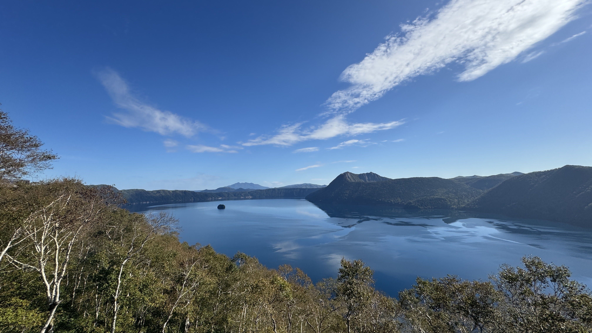
3日目 8:30 摩周湖
神の湖と呼ばれる、世界屈指の透明度を誇るカルデラ湖。
写真だと空が反射していて分かりにくいが、信じられないくらい水が深青色で
言葉に表せないほど幻想的である。（少しは写真の撮り方を勉強しようかな）
売店でカットメロンを買って食べた。
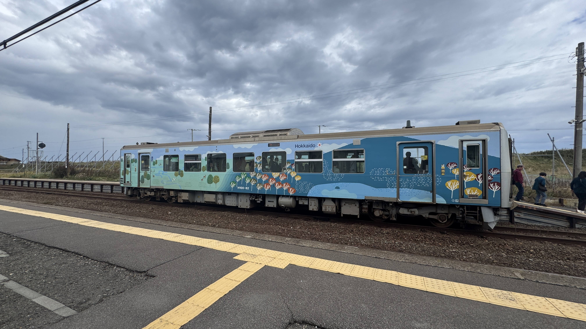
11:00 浜小清水駅
本旅行二度目のローカル線。
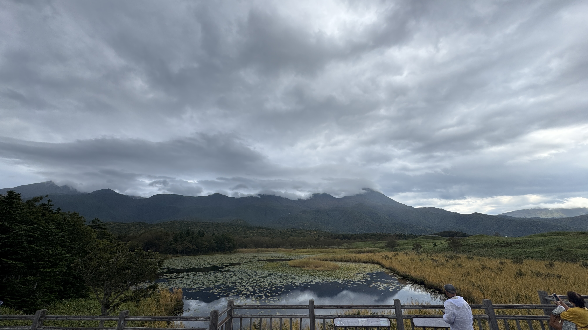
13:30 知床一湖
なんか雨降りだしてきた。えぇ……？
不吉な予感がするんだけど。
よく知床五湖と言われたりするが、一般観光客が訪れられるのは5つの湖のうち1番目だけ。
残りの4つは登山装備がないと入れない（ヒグマ対策である）。
一湖は大部分が水草で覆われていて、世界自然遺産の名から想像できるほどの綺麗さはなかった。
完全に観光地化されていて客も多く（外国語がすごく飛び交っていた）、神秘さはまず感じられない場所である。
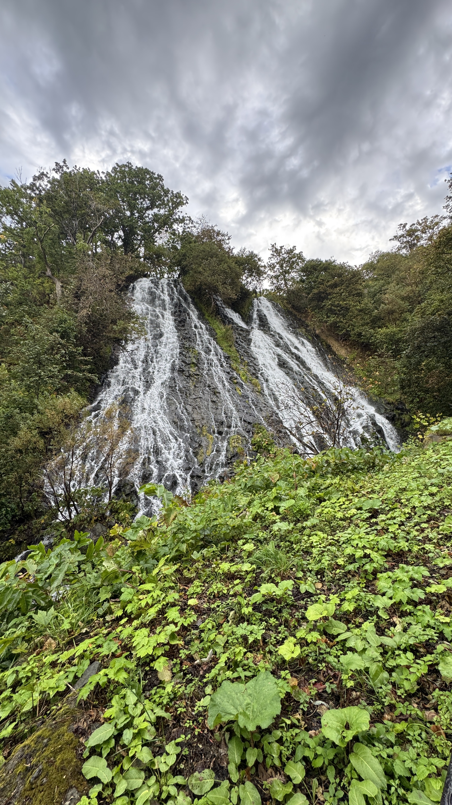
14:30 オシンコシンの滝
流れが2つに分かれていることから、双美の滝とも呼ばれる。
私が訪れた時は水量が少なかったかも？ 少し迫力に欠けているような気がしたが時期次第なのかな。
＊ ＊
メールの通知が鳴る。
差出人は学生教務課だ。このタイミングか、と思った。
合否結果は学内専用のwebサイト内に記載してあるらしい。
まだ滝を撮影し終わってない客を待って停車しているバスの車内で、私はゆっくりとそのサイトを開いた。
＊ ＊
合格していた。
後で分かった事だが、大学1年の前期、後期の成績だけでは足りておらず、合否判定材料の中で最後となる
2年前期の成績でなんとかボーダーを超えていたようだった。
危なかった。まあ2年前期で色々頑張ったからね。
なお、一緒に来ているM君も合格。
ていうか、M君の方が成績上だからね？
二人とも希望の同じ専攻に進めるか、彼だけが希望専攻に進むか、二人ともダメかの三択だったからね？
ともかく、薄氷の上を歩くような思いの日々とはこれでおさらばだ。
＊ ＊

急に晴れてきた。（バス内から撮影）
こんなにも、天気は主人公の感情と連動するんだね。
＊ ＊
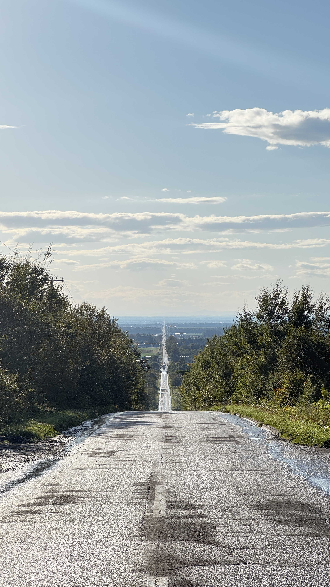
15:30 天に続く道（国道244・334号）
- to be continued -